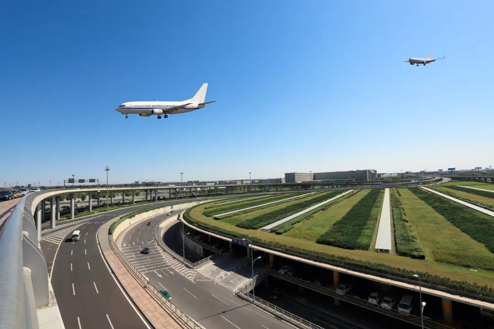

北京严防输入病例：首都机场周边分流，国际航班只减不增
原文链接 备份链接 首都机场对所有入境人员采取集中隔离措施，表明北京防控压力陡增，为此迅速采取各种有效防控手段，符合各方面的共同诉求 沈阳驻京办事处工作人员在准备对接旅客 文 |《财经》记者 陈亮 姚佳莹 编辑 | 施智梁 朱弢 为了舒缓 …

最大程度杜绝疫情的输入


历经数次“加码”后，北京入境防控措施再次升级。
3月22日，民航局等五部委联合发出公告，自3月23日零时起，所有目的地为北京的国际始发客运航班均须从天津、石家庄、太原等12个指定的第一入境点入境。
平时每周有将近200余班国际客运航班的首都国际机场，已成为“外防输入”的前沿阵地，防疫压力巨大。截至3月25日12时，北京累积报告境外输入确诊病例145例，仅3月23日，北京单日就新增境外输入确诊病例31例。
此前，首都机场已将全部国际进港航班，调整到了T3航站楼D区进港。但这导致部分时段出现了大批航班集中抵达，防控压力陡增。
目前，北京对入境人员实行闭环转送方案。北京市已启用位于顺义区的中国国际展览中心新馆作为入境北京的旅客转运集散地。北京新国展集散点一名工作人员告诉《中国新闻周刊》，入境航班大多集中在下午和晚上，多的时候一天有2000多名旅客入境。而在北京各区中，朝阳区入境人员占全市的一半，截至3月19日，朝阳区已累计接待转运入境人员4043人。
航空专家王亚南认为，对于北京而言，指定12个第一入境点分担压力，就是把防御的前沿向外推，确保首都安全。
但分流政策的实施，也带来一系列的后续问题。比如，如何安排就地隔离旅客的后续行程、外航陆续取消赴京航班等都不容忽视。
第一入境点城市如临大敌
值得注意的是，此次分流北京机场航班的12个机场运力，除上海浦东机场外，其余共计1174.5万座，加起来不及一个北京首都机场的运力。最高的南京禄口机场仅227.77万座，而最低的呼和浩特白塔机场不过7.16万座。
王亚南认为，作为北京防疫阵线外扩点，12个城市必须要能够配置足够好的资源和人员，确保12个入境点不会出现压力激增，导致入境防疫“失手”。
事实上，自分流政策出台以来，12个第一入境点城市均如临大敌。
南京、天津、西安、太原等城市均成立了相应的指挥部，成员包含海关、边检、公安、卫健等多个部门，并在机场设置专用机位、专用通道、专用发热旅客处置区。青岛等地还建设了入境医学排查方舱。
在入境防疫措施方面，12个第一入境点城市均进行了强化。南京等地将疫情防控重点国家名录在韩国、伊朗、意大利等16国基础上，新增了希腊、捷克等8国。对于入境航班，西安等城市将防疫环节进行了前置，海关检疫人员会登机进行测温，所有入境旅客需接受多次测温，并进行包括采样核酸检测、医学排查和流行病学调查等内容的卫生检疫。对于确诊病例、疑似病例、发热病例，及其密切接触者，会就地隔离、收治。检疫、转运、治疗、隔离等环节均闭环运作。
此前，针对入境人员，海关通常只进行测温，并在入关时要求旅客填写入境健康申明卡。北京首都机场一位负责入境的海关工作人员对《中国新闻周刊》坦言，旅客入境时如果瞒报旅居史，体温又是正常的，海关正常检测之后无异常，“也就没有办法做其他工作了”。
此次增加的百分百进行核酸检测，就是为了最大程度杜绝疫情的输入。
根据入境分流的相关要求，乘坐飞往北京的国际航班的旅客在第一入境点实施检疫并办理入境手续，行李清关。检疫符合登机条件的旅客可搭乘原航班入京，腹舱所带货物在北京清关。
然而在实际操作中，不少旅客则因疫情防控需求被就地隔离。
3月20日，原本由日本东京直飞北京的CA926航班，在呼和浩特“经停”12小时后，只载运了19名旅客前往北京。3月22日，由法国巴黎飞往北京的CA934航班，降落在天津，这是天津作为指定第一入境点迎接的第二班赴京国际航班。机上载有229名旅客和20名机组成员，经海关排查，共发现10名发热和有呼吸道症状人员，最终判定“密切接触者”171名（包含10名机组人员），全部进行了隔离。
目前，有关部门要求这些被隔离的旅客隔离期满后的后续行程，仍由航空公司自行解决。但具体相关流程仍有待明确。
此外，第一入境点政策为临时措施，航班不确定性和复杂性也增加了空管的难度。南京禄口机场一位工作人员告诉《中国新闻周刊》，目前分流入境航班“落点”并非固定不变，民航局会根据机场的接待能力，还有疫情防控要求进行动态调整。此前，指定停靠南京的新加坡航班即取消航班。
南京禄口国际机场疫情防控工作组应急组组长刘辉表示，虽然新加坡目前没有列入疫情防控24个重点国家之列，但实际上新加坡的航班情况很复杂，人员构成也很复杂，处理起来可能花费的时间也会更长。“对于飞机上的每一位乘客，都要进行一一甄别，搞清楚飞机上的乘客短期内是不是有疫情防控24个重点国家的旅行史。”
据《中国新闻周刊》从多家航空公司了解，目前入境第一入境点的航班，在第一入境点停留时间普遍超过10小时。3月23日，原定从阿联酋阿布扎比飞往北京的EY888航班飞抵西安咸阳国际机场后，进京旅客更是在西安滞留了25个小时，创下了分流方案实施以来的最长“分流”记录。
航空专家王亚南指出，现阶段对于航空公司而言，飞往北京的国际航班因为入境分流，整个航程被分为两段，中间间隔较久，这增加了航班的运行成本，使得运营过程更加复杂，且具有不确定性。王亚南认为，接下来，航空企业可能会选择进一步压缩航班，甚至取消赴京航班。
亦有业内人士分析，如何解决旅客的后续行程和因为落地机场严格的隔离要求导致的机组紧缺，是航空公司评估是否停航的最重要因素。
据悉，目前一些航空公司因为当地严格的隔离要求，有国际航线资质的机组资源已经变得很紧张。
多家外航取消赴京航班
随着北京入境分流政策的推行，不少航空公司开始从成本的角度去考虑是否继续运营飞往北京的国际客运航线。按相关政策，执行一趟飞往北京的国际远程航班，意味着整个机组将被隔离14天。
此前，国航被“分流”到天津的一班国际航班，就提前配了两套机组人员，航班落地天津后，由待命机组执行继续飞往北京。这对当地没有分公司或者备用机组力量的国外航空公司而言，取消航线无疑是最经济的选择。
《中国新闻周刊》从新加坡航空获悉，在3月24日至4月19日，新加坡飞往北京的航班仅搭载货运，而北京飞往新加坡的航班将保持客货运输，后续运营计划视情况而定。自2020年1月30日起，新航由新加坡飞往中国航班的执飞机组已取消在北京停留。日本航空、全日空等公司也确定将不载客运营东京至北京的航班，以规避北京国际航班分流政策，不经停第一入境点。
事实上，受全球疫情的蔓延和多国宣布“封国”的影响，不少航空公司宣布削减或停飞国际航班。
中东最大航空公司阿联酋航空宣布，3月25日起停飞全部旅客航班，阿联酋的另一家航空公司，总部位于阿布扎比的阿提哈德航空也宣布于3月25日停飞。3月23日，新加坡航空公司宣布减少96%原计划至4月底的航班运力，以应对世界各国为控制新型冠状病毒蔓延而采取的封闭边境管控措施。
航空业的一场寒冬难以避免。
新加坡航空答复《中国新闻周刊》的问询中表示，新航决定由147架飞机组成的新航及胜安航空机队中，有138架飞机将停飞，新航集团旗下的低成本航空公司酷航也将暂停大部分航线网络，49架飞机的机队中将有47架飞机停飞。
这导致了新航客运收入大幅下滑，为应对到来的寒冬，新航正在与飞机制造商商讨延缓飞机交付时间，集团管理层及公司董事也将降薪，并推行最高至特定管理层岗位的自愿无薪假期计划。鉴于情况不断恶化，新航已经与工会商讨进一步减少薪资支出并通过与各金融机构商讨未来的资金需求。
中国民航大学临空经济研究所所长曹允春接受《中国新闻周刊》采访时表达了对航空业的担忧。曹允春认为，航空业是个“赚的多，亏的也多”的行业，全球疫情的长时间持续，对全球民航业而言无疑是一次“洗牌”，大量航空公司倒闭并非没有可能。
随着中国国内疫情基本得到控制，国内航空市场开始复苏，多位专家认为，这对国内民航业来说是一种利好，但并非救命稻草，“回血”效果有待观察。
目前国内航空公司，国内国际航线市场营收份额大致“六四开”。曹允春认为，国内航班量尚未恢复到比较好的状态，疫情前期，中国“停摆”给航空业带来的损失一时间难以弥补。
王亚南也认为，单靠国内航线难以撑起局面，国际航线的萎缩对中国民航企业的压力依旧很大。
值班编辑：俞杨
推荐阅读
▼


原文链接 备份链接 首都机场对所有入境人员采取集中隔离措施，表明北京防控压力陡增，为此迅速采取各种有效防控手段，符合各方面的共同诉求 沈阳驻京办事处工作人员在准备对接旅客 文 |《财经》记者 陈亮 姚佳莹 编辑 | 施智梁 朱弢 为了舒缓 …
原文链接 备份链接 疫情影响下航空客流大幅下滑 航空公司面临较大经营压力 随着疫情在多国蔓延，全球对航空旅行的需求急剧下降，这使很多本就苦苦挣扎的航空公司陷入困境。 3月5日，英国航空公司Flybe宣布破产，成为第一家被疫情拖垮的航 …
原文链接 备份链接 ***********陈亮 王静仪 | 文*********** *************************施智梁 | 编辑************************* 2020年2月21日， 沈阳桃仙国 …
原文链接 备份链接 登临检疫后，海关直接在机坪上转诊了有明显症状的三人。在核酸检测结果出来后，又有两人结果呈阳性，被转运至指定医疗机构。与这两人有密切接触的44名旅客则在上海接受集中隔离。 记者 | 应 琛 3月24日13时50分，原计 …
原文链接 备份链接 第一财经 2020-03-21 16:10:31 听新闻 [* 陈姗姗 ](/author/157.html) 孙女士是哈尔滨人，回来之前曾想过很多种被隔离的可能，或者在哈尔滨，或者在北京，万万没想到最终是在呼 …